Washing: eight complete local hold sequences
1,520 lossless native views. Doctor and nursery, Opera training and Chapter Two catalog, at 1280×720 and 1600×720. Original artwork remains bound.
Machine capture succeeded. All 20 selected boards (108 native keys) were directly evaluated; the remaining native frames and complete ordinary actions remain unreviewed. This fixture opens the first task directly. It does not establish approach, ordinary root navigation or natural wall-clock timing. Controller, surface and actor use manual 30 Hz ticks; other presentation effects retain their renderer clock. Phone, child and owner acceptance remain separate.
Individual priorities
Draft scores for the selected washing views; source-art identity, actual approach/contact and complete-action acceptance stay separate.
| Item | Score /5 | Evaluation |
|---|---|---|
| WASH-DOCTOR-SURFACE-01 | 2.9 | Flat faucet, oval basin and detached round hands mismatch the painted room; no convincing connected washing subject. |
| WASH-NURSERY-SURFACE-01 | 2.2 | Nursery wash draw is bypassed by the nonempty widget-template return; selected active views contain no basin or washing hands. |
| WASH-DOCTOR-WORK-POSE-01 | 2.7 | Pinned work1 brings a hand/tool to the face; it cannot demonstrate hands washing. Do not claim that doctor cycles all medical tools. |
| WASH-NURSERY-WORK-POSE-01 | 2.8 | All four work cells occur during WASH HANDS, including bottle and care gestures. Only soap cell0 is the initial reuse candidate; it is a pose key, not a proven chronological wash loop. |
| WASH-COMPLETION-PUFF-01 | 2.5 | Pink dust/bop cloud includes visible square marks and explains no clean-hand consequence. Boxing puff reuse does not confer washing acceptance. |
| WASH-PROGRESS-PEARLS-01 | 3.5 | The small generic pearl row accumulates without corresponding visible hand cleaning. Keep a literal local soap/rinse result as the primary progress cue. |
Doctor sampled workflow: 2.7. Nursery sampled workflow: 2.2. Neither is a complete-action pass. Ordinary launch, approach/contact, natural wall-clock timing, phone, child and owner acceptance remain pending.
Every native frame
Written individual case review · Processes and unchanged source hashes · Full capture limitations · Preserved first fixture failure · Selected board coverage
Boundaries and recorded work poses
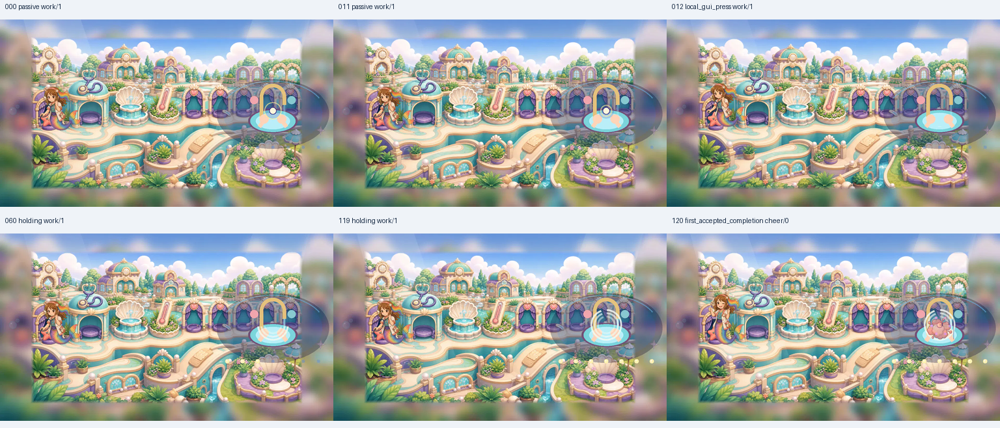
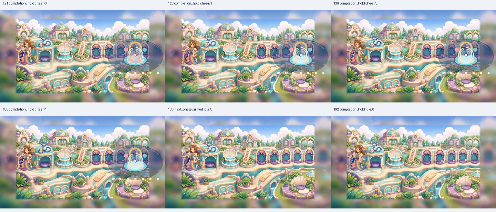
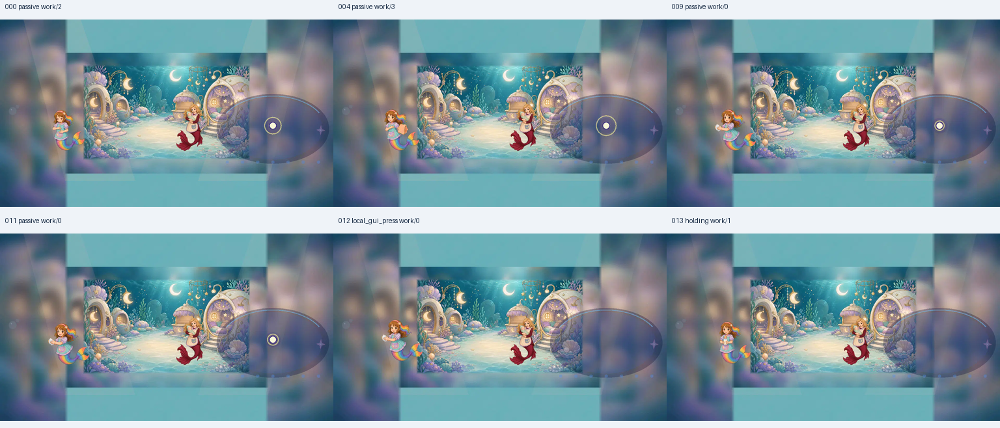
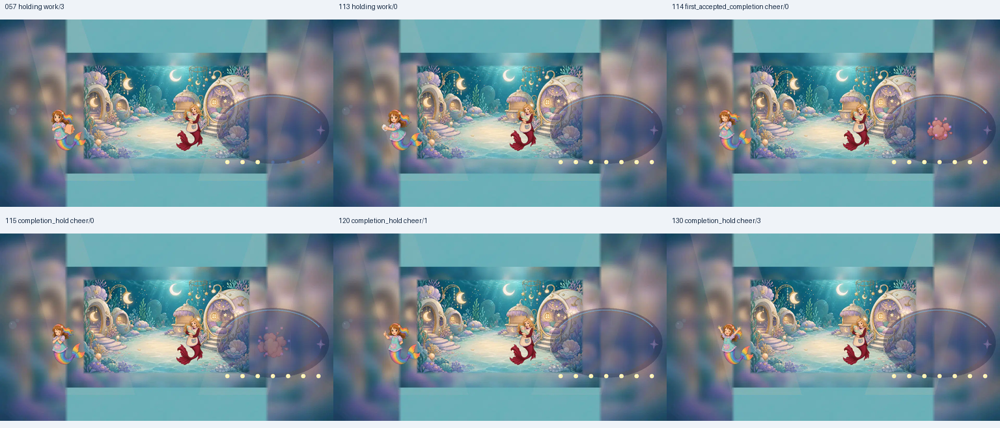
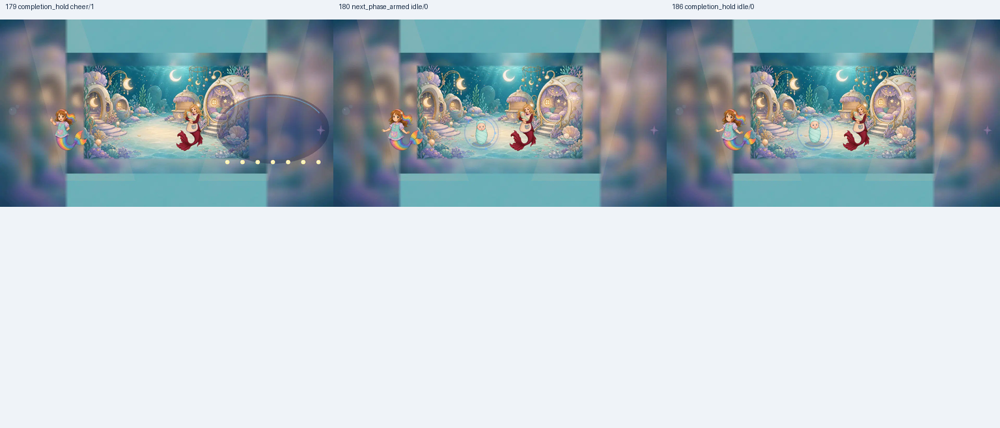
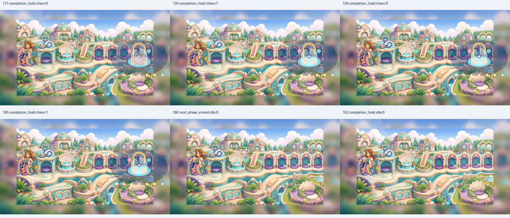
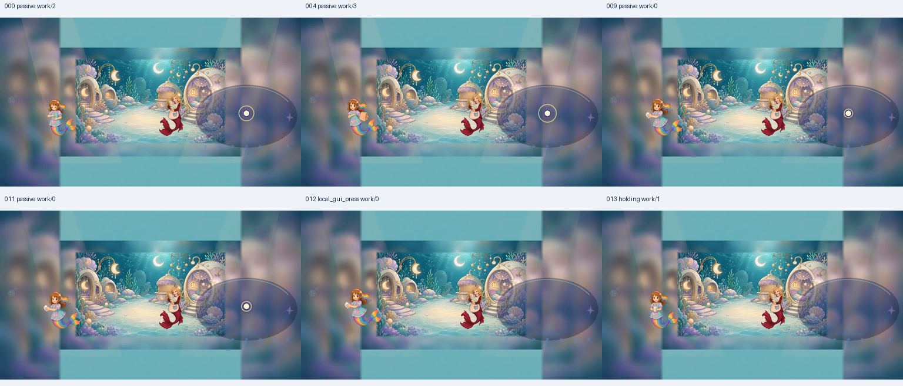
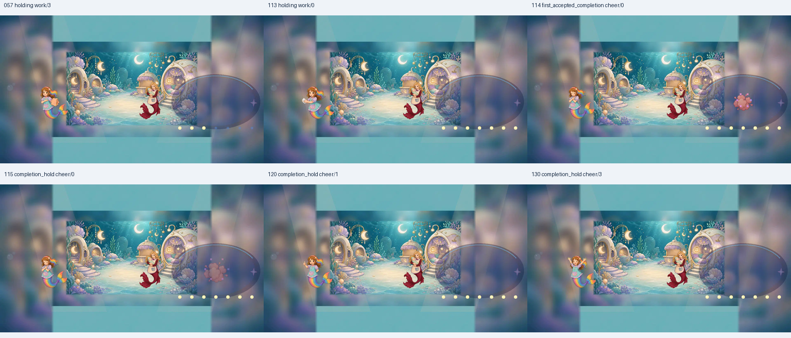
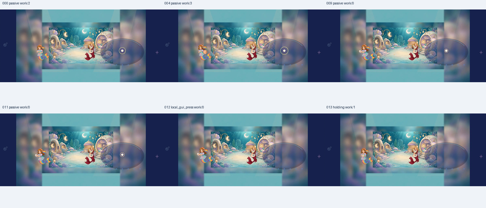
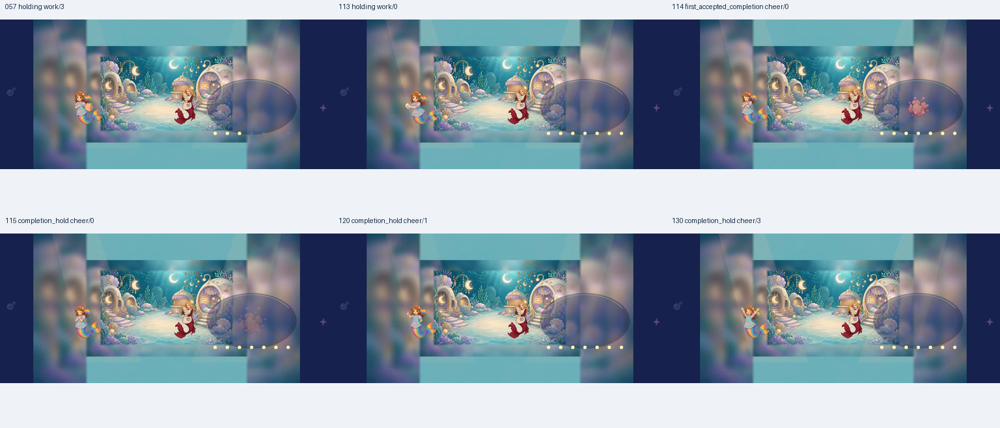
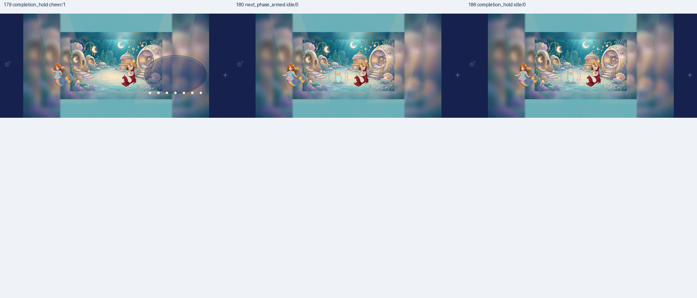
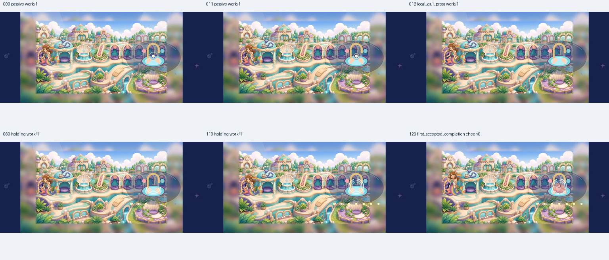
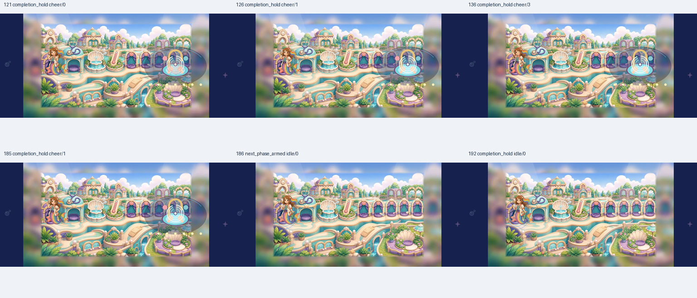
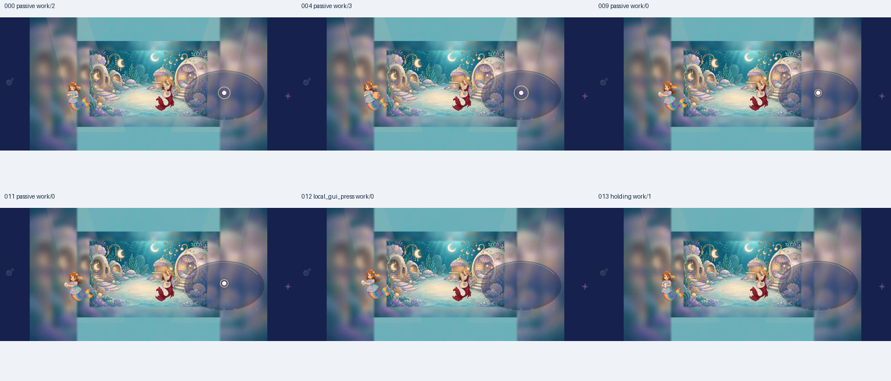
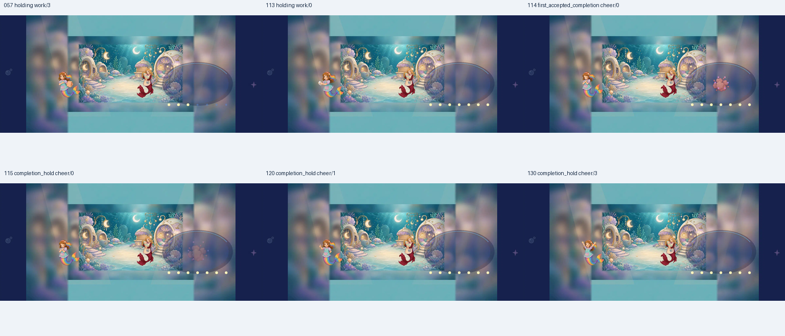
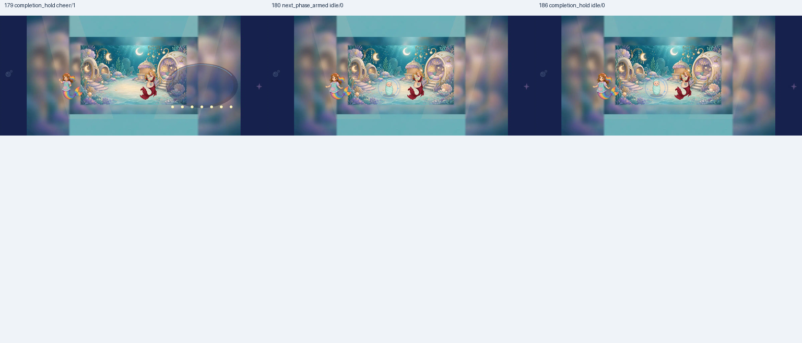